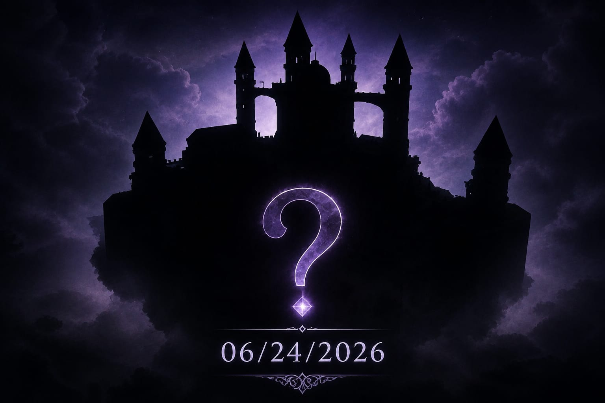
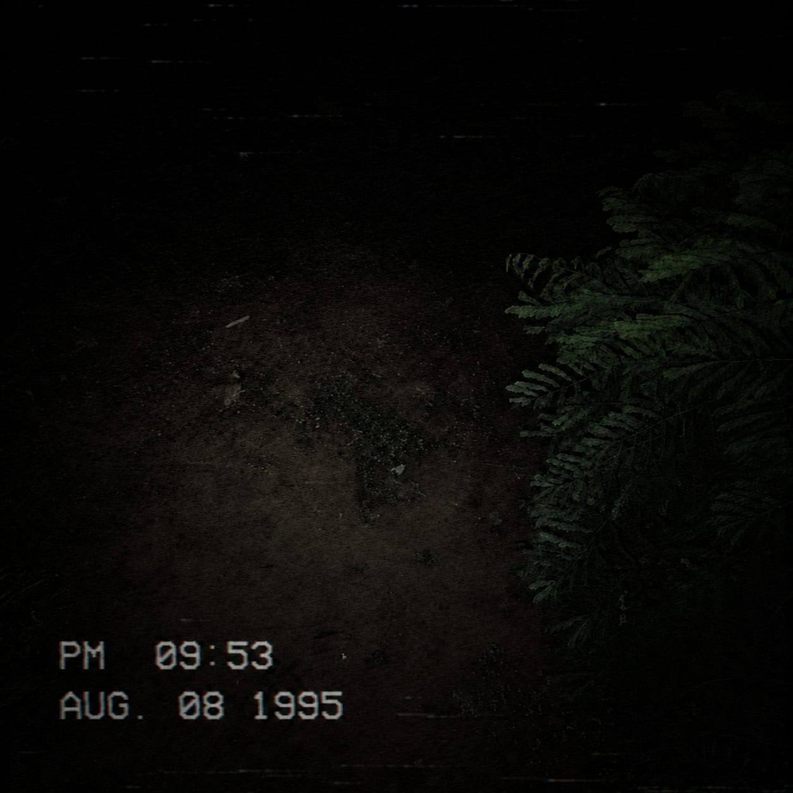
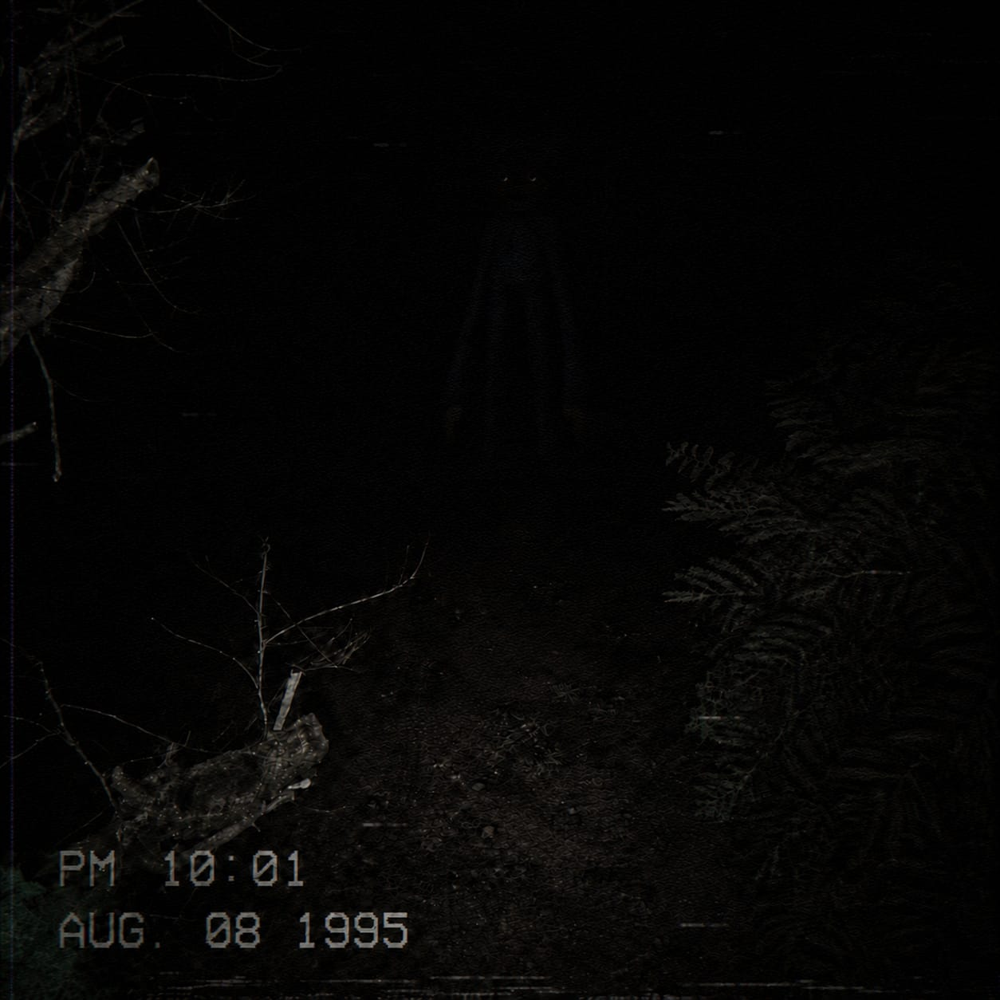

Após uma semana desde a publicação da Nota de Esclarecimento v1.0.1, venho trazer novas informações sobre o desenvolvimento da próxima atualização e comentar alguns pontos que temos observado dentro da comunidade.
Sabemos que muitos jogadores estão ansiosos por uma grande atualização e entendemos completamente essa expectativa. Apesar disso, o desenvolvimento de conteúdos para o jogo exige tempo, planejamento e dedicação. Atualmente, a equipe principal de desenvolvimento conta com menos de 20 integrantes, sem incluir editores, artistas conceituais, designers e criadores de miniaturas.
Para acelerar o processo, nossa equipe trabalha dividida em diferentes grupos. Enquanto uma parte está focada na atualização atual, outra já está preparando conteúdos para as próximas atualizações. Dessa forma, conseguimos manter o desenvolvimento contínuo e garantir novidades futuras.
Também sabemos que muitos jogadores sentem falta de uma maior frequência de conteúdo nos últimos anos. Por isso, nossa prioridade não é apenas lançar uma atualização rapidamente, mas entregar algo que realmente esteja à altura das expectativas da comunidade.
Em breve será divulgado o Boletim 20, que trará grandes revelações e responderá diversas perguntas que recebemos constantemente. Estamos trabalhando diariamente em modelos 3D, efeitos visuais, animações, scripts, cenários e inúmeras outras áreas do desenvolvimento para garantir a melhor experiência possível.
Nosso objetivo atual é lançar a atualização entre os meses de julho e agosto. Podemos afirmar que será uma atualização extremamente divertida, recheada de novidades e preparada com muito cuidado para agradar a comunidade.
Por fim, gostaríamos de agradecer a todos que continuam acompanhando e demonstrando paciência durante esse período. O apoio de vocês é fundamental para que possamos continuar evoluindo e entregando conteúdos cada vez melhores.
Obrigado pelo carinho, confiança e paciência.
Durante algum tempo, estive conversando com a equipe e acompanhando o desenvolvimento das futuras ilhas que receberão rework. Atualmente, grande parte delas já está em fase final de polimento e otimização, com o objetivo de entregar a melhor experiência possível para todos os jogadores.
Após algumas conversas com meus superiores, recebi autorização para começar a divulgar sneak peeks de algumas dessas ilhas. Vale lembrar que, embora o visual apresentado represente o estado atual do projeto, mudanças ainda podem acontecer durante o desenvolvimento caso sejam necessárias.
A partir de agora, toda quarta-feira será divulgado um novo sneak peek de uma ilha que receberá rework. E para dar início a essa série de revelações, no dia 24/06/2026 será apresentada a primeira prévia oficial.
Fiquem atentos, pois esta é apenas uma pequena amostra do que está por vir. Mais informações serão reveladas nas próximas semanas.
📅 Primeira Sneak Peek: 24/06/2026
📌 Novos sneak peeks serão divulgados toda quarta-feira.

Há algum tempo, entrei para uma equipe de desenvolvimento responsável por projetos incríveis no Roblox, incluindo Poppy Playtime Forever.
E hoje posso revelar uma informação: um novo jogo de Poppy Playtime está sendo desenvolvido no Roblox! 👀
Por enquanto, não posso compartilhar muitos detalhes, mas trouxe algumas imagens de fitas VHS para vocês terem um pequeno vislumbre do que está por vir.
Infelizmente, isso é tudo o que posso mostrar no momento. Porém, em breve, mais informações serão reveladas. 🔥
Fiquem ligados.


One week after the publication of Clarification Note v1.0.1, I would like to share new information regarding the development of the next update and discuss some points we have observed within the community.
We know that many players are eagerly awaiting a major update, and we completely understand this expectation. However, developing content for the game requires time, planning, and dedication. Currently, the main development team consists of fewer than 20 members, not including editors, concept artists, designers, and thumbnail creators.
To speed up the process, our team works in different groups. While one group focuses on the current update, another is already preparing content for future updates. This allows us to maintain continuous development and ensure future content.
We also know that many players feel there has been less frequent content over recent years. Therefore, our priority is not only to release an update quickly but also to deliver something truly worthy of the community’s expectations.
Bulletin 20 will be released soon, bringing major revelations and answering many questions we frequently receive. We are working daily on 3D models, visual effects, animations, scripts, environments, and many other development areas to provide the best possible experience.
Our current goal is to release the update between July and August. We can confidently say that it will be an extremely fun update, packed with new content and carefully crafted for the community.
Finally, we would like to thank everyone who continues to follow the project and show patience during this period. Your support is essential for us to continue evolving and delivering even better content.
Thank you for your support, trust, and patience.
For some time, I have been talking with the team and following the development of future islands that will receive reworks. Currently, many of them are in the final stages of polishing and optimization.
After discussions with my supervisors, I received authorization to start revealing sneak peeks of some of these islands.
From now on, every Wednesday a new sneak peek of a reworked island will be revealed. The first official preview will be released on 06/24/2026.
📅 First Sneak Peek: 06/24/2026
📌 New sneak peeks every Wednesday.
Some time ago, I joined a development team responsible for amazing Roblox projects, including Poppy Playtime Forever.
Today I can reveal some information: a brand-new Poppy Playtime game is currently being developed on Roblox! 👀
For now, I cannot share many details, but I brought a few VHS tape images so you can get a small glimpse of what is coming.
Unfortunately, that is all I can show at the moment. More information will be revealed soon. 🔥
Stay tuned.